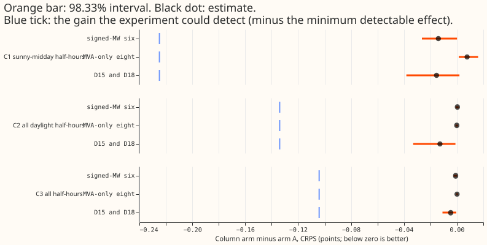
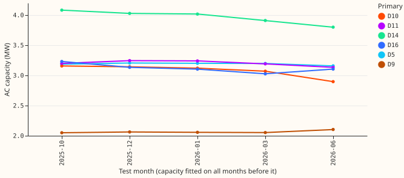
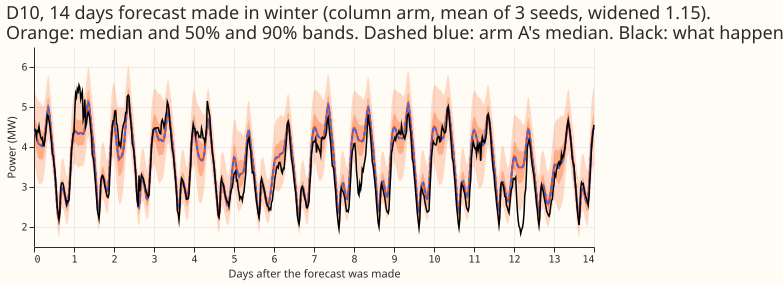
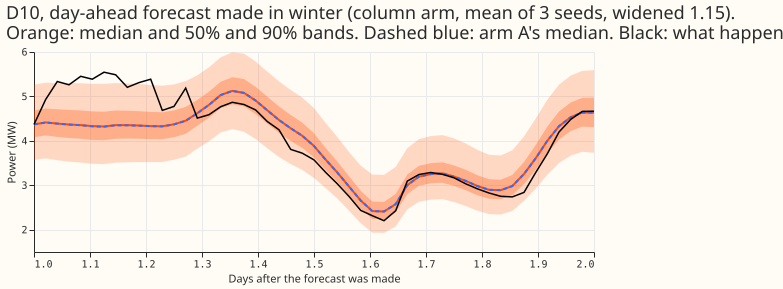
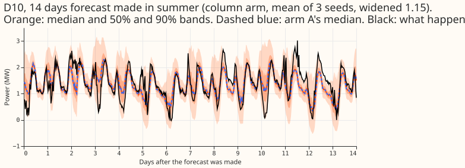
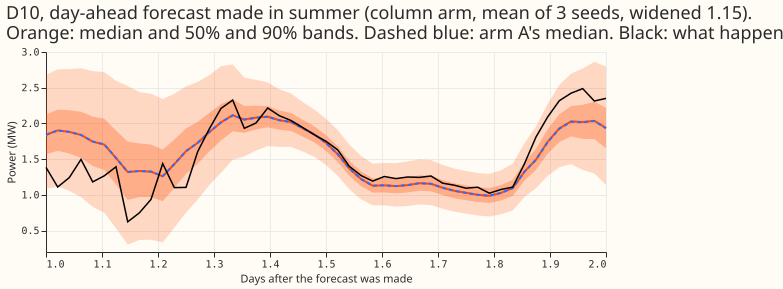

Does an explicit solar-output column, built from a capacity fitted on earlier months, improve the demand forecast at the six primary substations metered in signed megawatts?
Giving the demand neural network a column of "the solar output a fixed capacity would give" did not
improve the forecast at the six primary substations metered in signed megawatts. Primary
substations are called Primaries below. At the six Primaries named "signed-MW six" the meter reports
import and export with opposite signs; the other ten Primaries are metered differently, and eight of
them only in megavolt-amperes. We tested one extra input for experiment 425's best neural network
(arm A, pretrained on past-weather rows and fine-tuned on ensemble forecasts). The input is the solar
output that a fixed capacity would give under the forecast weather. The capacity comes from
experiment 474's method, a convex fit of solar capacity to the Primary's metered power, using only
months before each test month. We fine-tuned arm A with the column on five test months and three
seeds, and compared the new forecasts with the forecasts already stored for arm A. On sunny middays
(CAMS clear-sky index of 0.7 or more, 10:00 to 15:00 UK time) the continuous ranked probability
score (CRPS, a score for a whole forecast distribution, here in megawatts; lower is better) moved by
-0.014. The 98.33% interval is -0.027 to +0.000, and the smallest change the experiment could detect
(the minimum detectable effect) is 0.225. The verdict is refuted: the largest gain the interval
allows, 0.027, is about a tenth of the 0.225 we could detect. In the text below a difference of 1 MW
of CRPS is "1 point".
Figures






Results
- Arms. The two arms are arm A (experiment 425, seeds 0 to 2, stored forecasts) and the column arm (arm A fine-tuned from the same pretrained weights with the column, three seeds, five folds: 2025-10, 2025-12, 2026-01, 2026-03, 2026-06). Retraining is monthly, the fine-tuning learning rate is 2e-4, and the forecast uncertainty is widened by a factor of 1.15. Each of the 15 fine-tunes took 27 to 60 seconds on the GPU.
- Column. The column is the fold's capacity for each Primary multiplied by experiment 405's
solar shape of one megawatt of capacity (from the ensemble-mean weather), divided by 3 MW so that
the values sit near 1. The capacities are 2.0 to 4.1 MW of alternating current at the six
Primaries (computed by
e00501_capacity.py). The full-history fit reproduces experiment 474's stored values exactly. The column is zero at the other 10 Primaries. - Tested contrasts. Each contrast is the column arm's CRPS minus arm A's, on forecast days 1 to 10 at the signed-MW six, with the same rows in both arms. A Bonferroni correction for three contrasts sets the interval level to 98.33%, and the intervals come from resampling whole test months. A count is the number of Primary-half-hour forecasts.
| Slice | Difference | Interval | Minimum detectable effect |
|---|---|---|---|
| C1 sunny-midday half-hours (34,432) | -0.014 | -0.0265 to +0.0001 | 0.225 |
| C2 all daylight half-hours (158,999) | +0.0004 | -0.0009 to +0.0013 | 0.134 |
| C3 all half-hours (429,350) | -0.0009 | -0.0025 to +0.0001 | 0.104 |
- Report-only groups (not in the Bonferroni count, same interval level). Eight Primaries metered only in megavolt-amperes: C1 +0.0078 (+0.0014 to +0.0161), C2 -0.0001 (-0.0010 to +0.0008), C3 +0.0001 (-0.0004 to +0.0008). D15 and D18, the two Primaries with a short history that is cut at 2025-03-01: C1 -0.0154 (-0.0382 to +0.0020), C2 -0.0128 (-0.0330 to -0.0011), C3 -0.0047 (-0.0109 to -0.0004). The column is zero at the eight, so the shifts there presumably come from the shared neural-network weights.
- By fold (C1, points). 2025-10 -0.030, 2025-12 -0.008, 2026-01 +0.012, 2026-03 -0.025, 2026-06 -0.011. Leaving out each Primary in turn leaves C1 between -0.008 and -0.018.
- Absolute scores (signed-MW six, days 1 to 10, rows shared with the references): arm A 3.220, column arm 3.219, BG2 3.428 (the weekly XGBoost best guess of experiment 87), S0M 3.569 (the monthly XGBoost recipe of experiment 389, widened), manual heuristic 4.134, climatology 4.392. Arm A's sunny-midday CRPS by fold: 2025-10 4.41, 2025-12 3.73, 2026-01 5.59, 2026-03 4.08, 2026-06 3.07.
- Lead bands (signed-MW six): at 12 to 36 hours the CRPS is 2.822 for arm A and 2.820 for the column arm. At 36 hours to 10 days it is 3.268 for both.
- Tails (signed-MW six, days 1 to 10; nominal coverage 0.01, 0.05, 0.95, 0.99): coverage at q01, q05, q95, and q99 is 0.007, 0.022, 0.895, and 0.962 for the column arm, and 0.007, 0.022, 0.895, and 0.963 for arm A. The q99 pinball loss is 0.326 and 0.325. The CRPS on cold winter nights (the scoring machinery's cold-night slice) is 5.049 for both arms.
- Curtailment. The avoidable curtailment cost over the six Primaries, in pounds, summed over the scored months, at limit fraction f (the limit is f times the node's largest export before the scored year): at f = 0.9 the column arm costs 6.857 million and arm A 6.865 million; at f = 0.75, 16.94 million and 16.97 million; at f = 0.5, 38.16 million and 38.21 million. The manual heuristic costs 61.66 million at f = 0.5. Whether the manual heuristic matches NGED's practice is the maintainer's unconfirmed understanding.
Checks
- Median minus mean forecast. The median minus the mean forecast per Primary (the mean of the 11 quantiles, in MW) differs between the arms by under 0.001 MW at every Primary. The mean-forecast absolute error differs between the arms by about as little as the median-forecast absolute error.
- Triggers. The plan's audit lists seven conditions that would call for a further check. None occurred. No control failed, because the capacity fit reproduces experiment 474. The result does not contradict experiments 349, 352, and 416, which found a flat response. The quantile score and the mean-forecast error agree. Leaving out one Primary does not flip the sign of C1. The column arm can ignore its extra column, and it did not beat arm A by more than the width of the interval. We found no other experiment on the same rows to compare interval widths against.
- Unattributable. Experiment 474's capacities fail its placebo test at every step of its ladder. A gain would therefore not have shown that the capacities are right. The absence of a gain does not show that the capacities are wrong. Experiment 474's caveats for D5 (an export limit the solar term cannot represent), D9, and D16 (a pinned capacity that is too high) apply.
- Rows. In each fold, fine-tuning dropped 68,680 rows for the D15 and D18 start cut and 2,155 to 2,925 rows for flagged exact-zero half-hours. Across the 12 months for which arm A's forecasts are stored, scoring dropped 1,179 actual values because they were flagged exact zeros. Clean rows may hold events that NGED's logs do not label.
- Leaks left. Three constant scale factors use data after the fold: the recovery divisor (the
known-answer recovery of experiment 474, 0.956 to 0.994), the farm-output normalisation (the 99th
percentile of each metered solar farm's output over all history), and
u99(the 99th percentile of the unit solar shape, over D10's ensemble forecasts at all dates). The 2025-10 fold identifies its capacity increment from three months of data. The weather inputs at lag times are the same as arm A's, so arm A's caveat about past weather applies unchanged.
What serving would need
- Stored: one capacity for each of the six Primaries, refitted with each monthly refit of the neural network or once a year if the capacity is held. One capacity fit for one Primary took about 13 seconds.
- Computed at serving: experiment 405's solar shape of the ensemble-mean shortwave radiation and temperature for each half-hour, times the capacity.
- Added complexity: serving would need a capacity table for the six Primaries and a monthly or annual capacity refit, in return for no gain at the detectable size.
What to try next
This experiment's demand forecast score neither validated nor rejected the capacities, so the 10th and 90th percentile capacity arms were not run. Experiment 479's anomaly estimator is the one candidate we know of for a capacity that could pass a known-answer test.